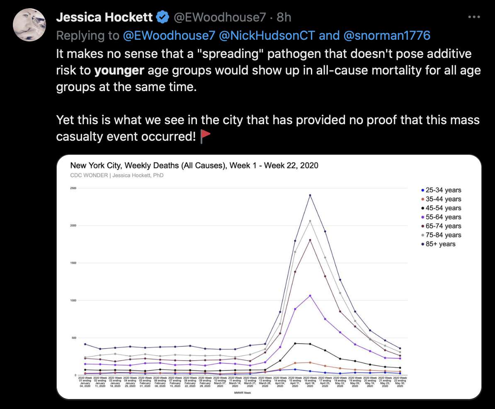
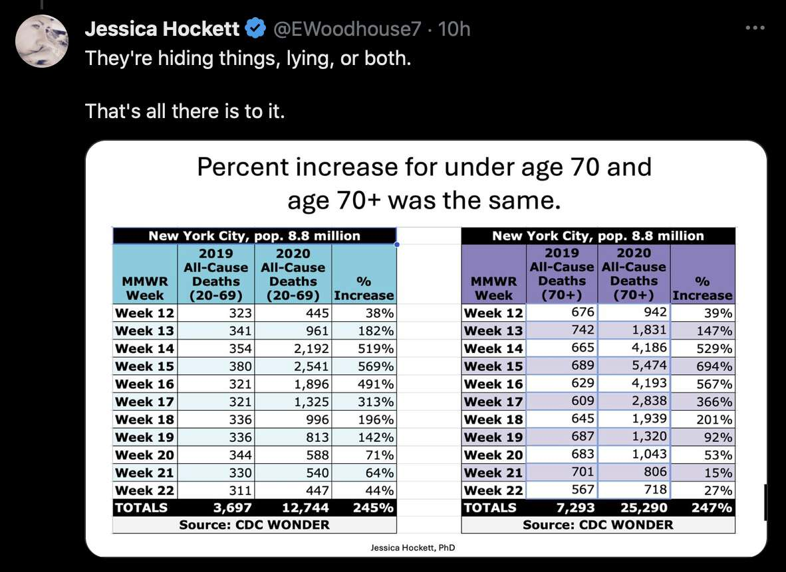
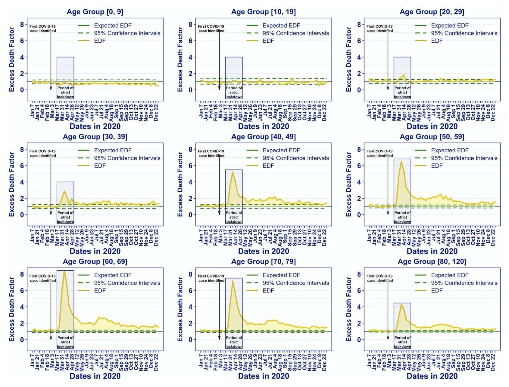
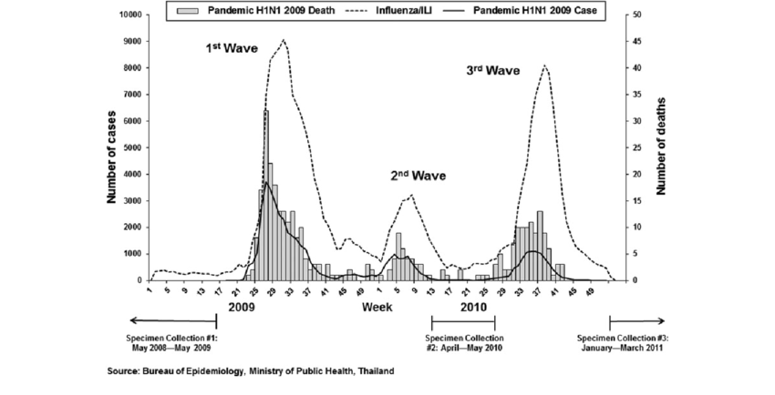
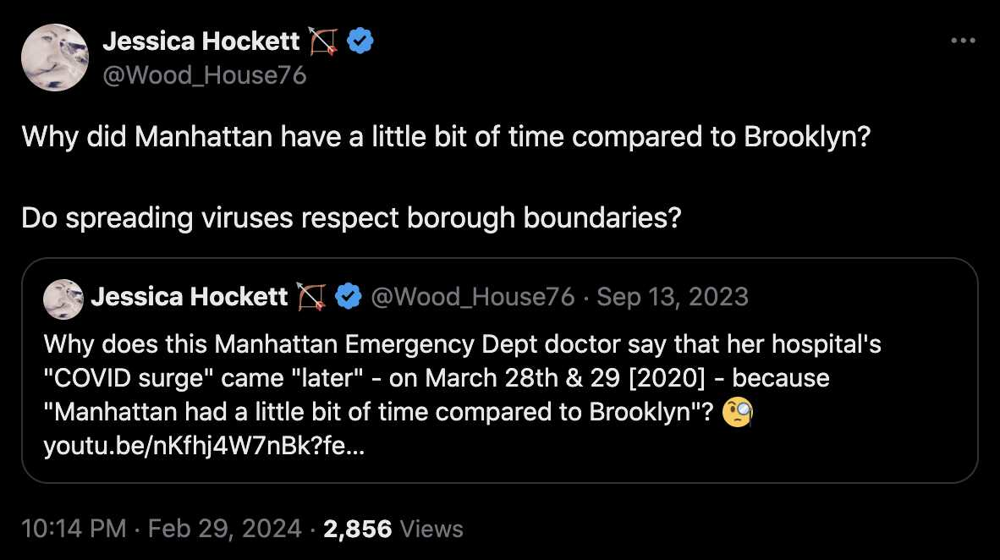
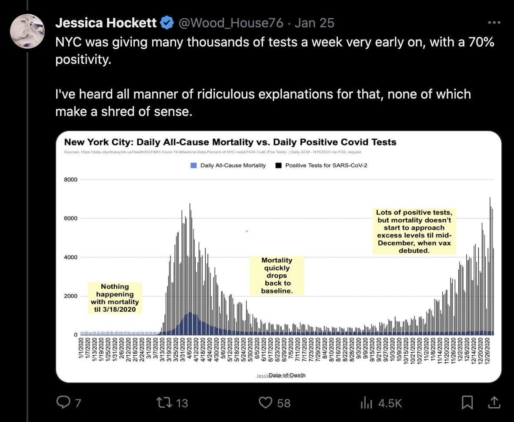
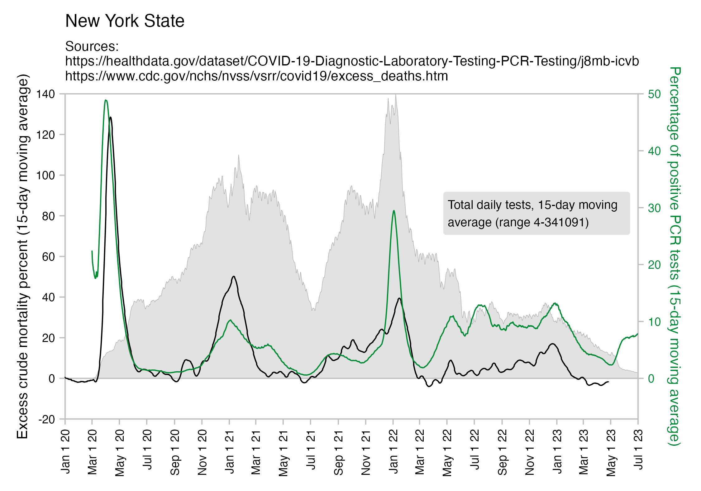

Hockett has implied that isolation pods like this were used to transport COVID patients as a form of theater to make the public audience more afraid of COVID: [https://x.com/EWoodhouse7/status/1691897517292556293]
However in the photo above that Hockett posted on Twitter, the patient who was being transported inside the isolation pod was the first reported case of COVID in Nebraska, and she had recently returned to United States from England. [https://dhhs.ne.gov/Pages/Updates-on-Nebraska%E2%80%99s-First-Case-of-Coronavirus-Disease-2019.aspx] So it made sense for the medical staff to use extra precautions because otherwise they may have been responsible for seeding the COVID pandemic in Nebraska.
In the photo above, the patient in the isolation pod was being transported to the University of Nebraska Medical Center. On the website of the hospital, I found a series of video tutorials where nurses are taught how to assemble and use an isolation pod unit. [https://app1.unmc.edu/nursing/heroes/elc_br_isotran.cfm] So if the hospital had invested resources in buying an isolation pod and training their staff on how to use it, and the pod was currently not in use because they did not yet have other COVID patients, then it made sense for them to try it out when they had their first COVID patient.
Hockett also wrote: "Give us an example of another 'highly infectious microbe' that would warrant patient transport in an *isolation pod* like the one apparently deemed necessary for the Nebraska woman in March 2020". [https://x.com/EWoodhouse7/status/1692282439790412208] However Wikipedia says: "Isolation devices were developed in the 1970s for the aerial evacuation of patients with Lassa fever. In 2015, Human Stretcher Transit Isolator (HSTI) pods were used for the aerial evacuation of health workers during the Ebola virus epidemic in Guinea.[3]" [https://en.wikipedia.org/wiki/Isolation_pod]
I found this photo of an Ebola patient being transported inside an isolation pod: [https://www.israel21c.org/ebola-cant-escape-israeli-mobile-isolation-units/]

I also found a blog post by a healthcare worker who said that their hospital started using isolation pods in helicopters and planes that were used to transport COVID patients, because earlier several crew members of their transport aircraft had caught COVID, so some of their helicopters or planes had to be grounded until the crew members could recover: [https://ctlin.blog/2020/12/30/transporting-patients-in-the-covid-bag-guest-post-gary-breen-md/]
The Problem
How are intubated and ventilated Covid-19 patients transported? As a hospitalist located at Yampa Valley Medical Center in Steamboat Springs, I have had to intubate and initial mechanical ventilation on a number of patients infected with Covid-19.
Initially, following the onset of this pandemic, these critically ill patients were being transported via rotor or fixed wing aircraft to our larger UCHealth facilities on the Front Range for optimal care by flight crews donning PPE which included N95 masks, goggles or face shields, gowns and gloves.
Despite this protective gear, many of the flight crews contracted Covid, which resulted in some emergency transport services becoming grounded until crews could recover. A better, safer option for transporting these patients was needed.
The ISO-POD
Originally developed to transport patients infected with the Ebola virus, The ISO-POD is negative-pressure patient isolation and transport system which allows us to safely transport critically ill Covid-19 patients, while simultaneously providing protection to our emergency personnel. The device has a port which allows for ventilator tubing, IV lines, and monitoring lines to pass, as well as 12 gloved iris openings to allow the flight crew staff access to the patient from head to toe.
Hockett has suggested that the 2009 pandemic strain of H1N1 may have been circulating in humans before 2009 but it was simply not been detected earlier because PCR tests only targeted other strains of H1N1. [https://www.woodhouse76.com/p/setting-the-stage-for-flus-disappearing]
However you can try going to the NCBI's influenza virus database. [https://www.ncbi.nlm.nih.gov/genomes/FLU/Database/nph-select.cgi] Set sequence type to nucleotide, host to human, segment to HA, and subtype to H1N1. Then click "Full-length only", click "Add query", click "Customize FASTA defline" and set the format to >{accession} {strain};{country};{year};{month};{day};{host}, and click "Download results". Then run this code:
$ brew install seqkit mafft
[...]
$ seqkit fx2tab Downloads/FASTA.fa|awk -F\; '$3<2009||/CY040888/'|seqkit tab2fx|mafft --thread 4 ->flu.fa
[...]
$ curl -s https://pastebin.com/raw/pDwYNf1r>pid.cpp;g++ pid.cpp -O3 -o pid
$ ./pid<flu.fa>flu.pid
$ awk -F\\t 'NR==1{for(i=2;i<=NF;i++)if($i~/CY040888/)break;next}{print$i,$1}' flu.pid|sort -rn|head
100.0000 CY040888 A/Mexico/47N/2009;Mexico;2009;04;25;Human
99.1770 OQ535143 A/USA/34717/1935;USA;1935;11;;Human
93.7684 FJ986621 A/Ohio/02/2007;USA;2007;08;17;Human
93.7684 FJ986620 A/Ohio/01/2007;USA;2007;08;17;Human
91.9459 U53163 A/Wisconsin/4755/1994;USA;1994;;;Human
91.9459 U53162 A/Wisconsin/4754/1994;USA;1994;;;Human
91.9459 L24362 A/Maryland/12/1991;USA;1991;;;Human
91.9459 CY039909 A/Maryland/12/1991;USA;1991;;;Human
91.8871 CY024925 A/Ohio/3559/1988;USA;1988;;;Human
90.7701 DQ889689 A/Iowa/CEID23/2005;USA;2005;;;Human
There's a total of 1,688 sequences with a collection date before 2009, which are listed in the output above so that the sequences are sorted by their distance to an early 2009 swine flu sample from Mexico. Apart from a single sample that's probably mislabeled because its collection year is listed as 1935, the closest neighbor of the Mexican sample has only about 94% identity in the HA segment. (The HA protein is the equivalent of the spike protein in coronaviruses, so it evolves faster than other proteins because it's exposed to the immune system, but even though most current human strains of H1N1 developed out of the 2009 swine flu strain, the HA protein of human H1N1 samples from 2023 is still about 95% identical to the 2009 strain.)
So at least in the NCBI's influenza virus database, apart from the single sample with a collection year in 1935 that is probably mislabeled, there's no human sequences from before 2009 that are anywhere close to the 2009 swine flu strain.
And actually even the closest swine sequences have only about 95% identity in the HA segment, which makes me suspect that some gain-of-function work was involved in getting the 2009 swine flu strain to readapt to a human host. And the reason why I use the word "readapt" is that if you look at the pre-2009 swine sequences of H1N1 that are the most similar to the 2009 strain, they evolved out of a strain of H1N1 that was fairly close to the Spanish flu in the 1930s when it's first found in NCBI's influenza virus database, so the 2009 swine flu strain might basically be a descendant of the Spanish flu which jumped from humans to pigs and back to humans:

Hockett posted this tweet: [https://x.com/EWoodhouse7/status/1681083398700539904]

However the number of tests that were done in spring 2020 was fairly low, so they probably weren't testing that many asymptomatic people who didn't actually have COVID:

There was a shortage of tests in spring 2020, so on March 25th (in both UTC and local time) there was an announcement posted on Twitter that hospitals in New York City had stopped testing patients who do not require hospitalization: "Two Queens hospitals are COVID-19 testing sites: NYC Health + Hospitals/Elmhurst & NYC Health + Hospitals/Queens (also serving as drive-thru testing site). NYC Health + Hospitals are no longer testing patients who do not require hospitalization. This is due to an increase in the number of Coronavirus cases in the city and the dwindling number of tests and supplies for medical staff." [https://x.com/SenJoeAddabbo/status/1242856965157634054]
Usually PCR positivity rates are reported for the whole country and not for individual cities like New York City, so it's rare to find positivity rates of 70% in the whole country if the whole country doesn't get COVID at the same time. However according to OWID's data, the PCR positivity rate has sometimes climbed above 60% in some countries like Bolivia, Mongolia, and Taiwan (even though for example around half of the population of Mongolia is concentrated in Ulaanbaatar, and around half of the rest of the population still lives a nomadic lifestyle, so maybe they weren't testing people who lived in yurts at the steppe, and most of the sedentary population of Mongolia lives in a single city):

And additionally if you look at WHO's influenza testing data for a single country like Germany in the screenshot below, the percentage of positive PCR tests for influenza viruses has often reached over 60% or even over 70% during the peak of the flu season (but in individual cities or regions within a country, you'd of course get even higher peaks in the percentage of positive tests): [https://app.powerbi.com/view?r=eyJrIjoiZTkyODcyOTEtZjA5YS00ZmI0LWFkZGUtODIxNGI5OTE3YjM0IiwidCI6ImY2MTBjMGI3LWJkMjQtNGIzOS04MTBiLTNkYzI4MGFmYjU5MCIsImMiOjh9]

The Elmhurst Hospital in Queens was characterized as the epicenter of the COVID outbreak in New York City, but Hockett has pointed out that in spring 2020 Elmhurst had a low number of ICU visits and a low number of occupied beds: [https://x.com/EWoodhouse7/status/1689833208362209280, https://x.com/EWoodhouse7/status/1643336428942655488]


However a New York Times article published on March 25th said: "Elmhurst, a 545-bed public hospital in Queens, has begun transferring patients not suffering from coronavirus to other hospitals as it moves toward becoming dedicated entirely to the outbreak." [https://www.nytimes.com/2020/03/25/nyregion/nyc-coronavirus-hospitals.html]
According to a New York Times article published in May 2020, elective surgeries had also been canceled during the COVID peak: [https://www.nytimes.com/2020/05/20/nyregion/hospitals-coronavirus-cases-decline.html; read with https://github.com/iamadamdev/bypass-paywalls-chrome]
Hospitals are eager to restart elective surgery, a needed service that is also a major revenue generator.
At Elmhurst one recent day, staff members told hospital leaders that they were reviewing surgeries that had been delayed since March. They said they had a list of patients who should be operated on this month. That included cancer and neurosurgery patients who, in a tiered system released by Medicare in April, fell into categories marked "do not postpone."
But preparing to resume the procedures is challenging because spaces reserved for surgery patients - post-anesthesia units, surgical I.C.U.s. and even operating rooms - were repurposed around the city to treat those who were critically ill with the virus. On Tuesday, Elmhurst still had 35 critically ill Covid patients, more than the total I.C.U. capacity it maintained before the pandemic.
Even if those areas can be freed up, medical institutions have to create a safe pathway for patients to avoid infection as they enter hospitals, move to operating rooms, undergo monitoring afterward and then recover or receive intensive care.
Hockett posted this plot which showed that the number of non-COVID ED visits was much lower than usual in Bergamo during spring 2020, which might also explain why ED visits were depressed during the COVID peak in NYC (but in Hockett's plots for NYC you can't see visits for COVID disaggregated from non-COVID visits): [https://x.com/Wood_House76/status/1712892165603365135]

On March 25th 2020, the New York Times published an article titled "13 Deaths in a Day: An 'Apocalyptic' Coronavirus Surge at an N.Y.C. Hospital". [https://www.nytimes.com/2020/03/25/nyregion/nyc-coronavirus-hospitals.html] The article featured a video from Elmhurst Hospital that was shot by Colleen Smith, who was described as an emergency room doctor at Elmhurst. Smith's video showed that there was a long line of patients outside the hospital, and the article by NYT also said: "The line of people waiting outside of Elmhurst to be tested for the coronavirus forms as early as 6 a.m., and some stay there until 5 p.m. Many are told to go home without being tested."
On March 29th 2020 UTC, someone posted a viral YouTube video titled "What Elmhurst Hospital looks like when the news cameras aren't rolling! #filmyourhospital Part 1/3". [https://www.youtube.com/watch?v=K0z8NhxNTaU] The video showed that there was no longer a line of people waiting to get tested, which many conspiratards interpreted to mean that the line was staged for Colleen Smith's video. Many conspiracy theorists thought that the people outside the hospital were COVID patients who had to wait outside the hospital because the hospital was so full, and they didn't realize that the people outside the hospital were waiting to get tested for COVID in the tents that had been set up outside the hospital.
It doesn't seem like the line outside Elmhurst was only staged for Colleen Smith's video, because I found tweets from several different days by random people who posted photos of the line outside Elmhurst. [https://x.com/search?q=until%3A2020-3-25%20elmhurst%20line&f=live] The earliest tweet I found about the line was from March 20th (in both UTC and local time), when someone tweeted: "This is the line for Covid-19 tests at Elmhurst Hospital in Queens this morning. Police monitoring, car with lights flashing". [https://x.com/jdavidgoodman/status/1241011394717368325] On March 23rd, someone tweeted an image of the line and wrote: "line to be tested at elmhurst hospital since 7am it goes all the way down the block.." [https://x.com/kingzeek_/status/1242072579977940999]
However on March 25th (in both UTC and local time), which was the same day when the NYT article about Colleen Smith's video was published, a senator from New York tweeted: "Two Queens hospitals are COVID-19 testing sites: NYC Health + Hospitals/Elmhurst & NYC Health + Hospitals/Queens (also serving as drive-thru testing site). NYC Health + Hospitals are no longer testing patients who do not require hospitalization. This is due to an increase in the number of Coronavirus cases in the city and the dwindling number of tests and supplies for medical staff." [https://x.com/SenJoeAddabbo/status/1242856965157634054] So that might explain why the line went away.
On March 30th (in both UTC and local time), someone tweeted that there were now less than 10 people standing in line outside Elmhurst. [https://x.com/ciaobelladg/status/1244693218031276034] So if the video that showed no queue was shot on March 29th, maybe the person who shot the video would've witnessed a small queue building up again if they waited until the next day.
Some people were saying that the people who stood in line in Colleen Smith's video were crisis actors because they were all facing away from the camera (which is something that crisis actors have been accused of doing on various occasions). But maybe the people were just facing forwards because they were standing in a line, or maybe the people standing in line were filmed from the back for privacy reasons. And there's also a video that was posted on Twitter by someone who was standing in the line themselves waiting to get tested, but even though they turned around during the video to film both people before them and after them, basically none of the faces of the people were visible in the video, and there appeared to be one or two people who turned their face away when they noticed that they were being filmed. [https://x.com/ruthiwest/status/1244434997513203712]
Elmhurst is located in Queens, but if you look at the daily number of tests performed in Queens County, it remained fairly flat around 2,000-3,000 from March 21st until April 21st, so maybe the reason why there wasn't a bigger increase in the number of tests performed was that there was actually a shortage of tests. [https://health.data.ny.gov/Health/New-York-State-Statewide-COVID-19-Testing/xdss-u53e]
An article published on March 20th local time said: "The city has begun expanded, appointment-only COVID-19 testing at two Queens hospitals, NYC Health + Hospitals/Elmhurst (formerly Elmhurst Hospital Center) and NYC Health + Hospitals/Queens (formerly Queens General Hospital) in Jamaica with cases passing the 1,400 mark in the borough as of Friday morning. [...] The testing at both Queens hospitals will be inside tents that are similar to the ones used during the H1N1 outbreak in 2009. Patients with appointments will receive an expedited consultation with a primary care physician to capture their medical history before their sample is collected for testing." [https://qns.com/2020/03/city-begins-covid-19-testing-at-two-queens-hospitals/] So it might explain why the first photos of the queue outside Elmhurst I found on Twitter were from March 20th. And if the patients who went to get tested at the tent had to discuss their medical history with a primary care physician, it might explain why the testing took so long that people had to wait for hours to get tested.
I also found article about the testing tent outside Elmhurst which was published on March 19th local time, and an update to the article dated March 20th said that "the city announced that the testing tent is now open". [https://queenseagle.com/all/elmhurst-hospital-covid19-testing]
On April 25th, Governor Cuomo announced that testing capacity had been increased so that more people were now eligible for testing and that people were able to get tested at more than 5,000 pharmacies: [https://qns.com/2020/04/new-york-covid-19-testing-eligibility-expands-5000-pharmacies-to-collect-samples/]
As New York state continues increasing its testing capacity, more New Yorkers will be eligible to get a COVID-19 test - and be able to take them at their local pharmacy, Governor Andrew Cuomo said on Saturday.
During his daily briefing, the governor said that the state's 300 labs have ramped up testing to the point where more collection sites are need to obtain additional samples. To that end, Cuomo has signed an executive order authorizing more than 5,000 independent pharmacists to serve as collection sites.
Additionally, the state is relaxing testing criteria, which was limited to patients seriously ill from coronavirus or those who were exposed to COVID-19 and are at high risk of becoming infected. Now, the state will permit first responders, health care workers and various essential workers to take a COVID-19 test.
Hockett wrote that she knew that people were waiting outside Elmhurst to get tested in the tents: "It was people lined up for testing they were doing outside under tents. It gave the impression that Elmhurst was being overrun, and also scared people who may have needed medical care for other reasons into staying home." [https://x.com/EWoodhouse7/status/1645279433471737856] However she still tweeted the video below which showed that there was no line outside Elmhurst but she didn't explain why the line had become empty: [https://x.com/EWoodhouse7/status/1643690320897474560]
Hockett published a Substack post about how in a paper by Parish et al. from 2021 titled "Early Intubation and Increased Coronavirus Disease 2019 Mortality: A Propensity Score–Matched Retrospective Cohort Study", the peak in COVID deaths in NYC hospitals seemed to occur two weeks earlier than in other sources: [https://www.woodhouse76.com/p/covid-death-discrepancy-for-nyc-public]

Hockett used data from Supplementary Table 2 of the paper which is titled "Number of new COVID-19 cases per week over course of the pandemic from March 1st, 2020 to December 1st, 2020, and the associated rates of intubation and mortality, for all cases (n = 8247) and for cases without DNI orders (n = 7597)." The week numbers in the table are expressed as weeks after March 1st 2020, ranging from 1 to 39:

However the authors of the paper may have made a mistake in converting the week numbers to week numbers relative to March 1st, because March 1st fell on a Sunday so it has a different week number depending on whether you're using a system of week numbers where the week starts on Monday or Sunday, and it could for example be that at some step of their code they used ISO 8601 week numbers where the week begins on Monday.
The authors of the paper wrote that they used R, but in R the as.Date function doesn't support converting ISO 8601 week numbers to dates, because the function only supports the %U and %W week number formats but not the %V format, and it's a pain in the ass to write code yourself for converting ISO 8601 week numbers, so in the past I have erroneously converted data that used ISO 8601 week numbers using the incorrect week number scheme, and it's an easy mistake to make:
> as.Date("2020 9 0","%Y %U %w") # get first day of week 9 in Sunday-based system
[1] "2020-03-01"
> as.Date("2020 9 1","%Y %W %u") # get first day of week 9 in Monday-based system
[1] "2020-03-02"
> isoweek=\(year,week,weekday=1){d=as.Date(paste0(year,"-1-4"));d-(as.integer(format(d,"%w"))+6)%%7-1+7*(week-1)+weekday}
> isoweek(2020,9) # get first day of week 9 in ISO 8601
[1] "2020-02-24"
> as.Date("2020 9 1","%Y %V %w") # `as.Date` doesn't support `%V` (ISO 8601 week number) so this returns the month and day of the current date (2023-09-08)
[1] "2020-09-08"
December 1st 2020 fell on a Tuesday, so it was the third day of the week in a Sunday-based system. The week number of December 1st 2020 is 40 bigger than the week number of March 1st in the %V (ISO 8601) and %W (Monday-based) systems but it's 39 bigger in the %U (Sunday-based) system:
$ brew install coreutils [...] $ gdate -d2020-3-1 '+%V %U %W %A' 09 09 08 Sunday $ gdate -d2020-12-1 '+%V %U %W %A' 49 48 48 Tuesday
In Supplementary Table 2, the last week included in the data is week 39 which is only 38 bigger than the number of the first week, which would appear to indicate that the partial week that contains December 1st was omitted from the table.
However on the other hand on week 39 in Supplementary Table 2, the number of new COVID cases was only 73 even though it was 116 on week 38 and it had been increasing steadily for 4 weeks before then, so week 39 might also refer to the incomplete week that consists of November 29th, November 30th, and December 1st. According to the dataset for the daily number of COVID deaths by county that was published on the GitHub account of the New York Times, the daily number of new COVID cases in New York City was increasing at a fairly constant pace in late November and early December, so if the last week of data included in Supplementary Table 2 would be a complete week, it probably shouldn't have a much smaller number of cases than the second-last week (unless for example a large number of cases were omitted on the last week because of a registration delay):
$ wget -q https://raw.githubusercontent.com/nytimes/covid-19-data/master/us-counties-2020.csv
$ awk -F, 'NR==1{print"date new_cases new_deaths"}$2=="New York City"&&$1>="2020-10-31"&&$1<="2020-12-10"{print$1,$5-x,$6-y;x=$5;y=$6}' us-counties-2020.csv|sed 2d|column -t
date new_cases new_deaths
2020-11-01 950 12
2020-11-02 640 4
2020-11-03 798 4
2020-11-04 795 13
2020-11-05 1072 13
2020-11-06 1202 7
2020-11-07 1165 6
2020-11-08 1393 14
2020-11-09 1161 11
2020-11-10 1207 2
2020-11-11 1732 9
2020-11-12 1663 3
2020-11-13 1826 9
2020-11-14 1800 10
2020-11-15 1452 6
2020-11-16 1293 12
2020-11-17 1940 10
2020-11-18 1735 3
2020-11-19 1839 18
2020-11-20 2030 21
2020-11-21 1948 14
2020-11-22 1925 4
2020-11-23 1787 12
2020-11-24 1725 2
2020-11-25 1918 10
2020-11-26 2336 11
2020-11-27 2561 14
2020-11-28 2098 5
2020-11-29 2303 8
2020-11-30 2501 6
2020-12-01 2577 13
2020-12-02 3200 10
2020-12-03 3305 8
2020-12-04 3600 18
2020-12-05 3227 23
2020-12-06 3135 19
2020-12-07 3842 22
2020-12-08 3145 29
2020-12-09 4079 -5
2020-12-10 3449 10
However if week 39 is the week that contains December 1st, then week 1 would be the week that starts on March 8th if the week starts on Sunday or on March 9th if the week starts on Monday. Which would explain why the deaths would be shifted by a single week. But I don't know why the deaths would be shifted by two weeks though.
Another reason why the week numbers in the Parish et al. paper may have been off by one could be that in the %U strftime format where the week begins on Sunday, the first week of the year is week zero, so for example date -d2020-1-1 +%U prints 00, but for example CDC WONDER uses a week number scheme where the week begins on Sunday but the first week of the year is week 1. (I noticed it when I got the wrong result when I tried to use the %U format to convert week numbers from CDC WONDER to dates.)
Hockett has been saying that the increase in deaths in NYC in spring 2020 was too sudden to be caused by the spread of a novel virus, or that a similar sharp spike in deaths was not seen elsewhere: [https://x.com/EWoodhouse7/status/1664603889037967363]


However according to OWID's data, for example in Macao the excess mortality went from 11% in November 2022 to 266% the next month, 256% the next month, and 1% the next month. And in Hong Kong, the excess mortality went from -1% in January 2022 to 33% the month, 169% the month, 33% the next month, and 3% the next month. Both Macao and Hong Kong had almost no excess deaths or COVID deaths before 2022.
Many other countries have had similar short-lived spikes in excess mortality that peaked at around 150% or higher, and usually the spikes in excess mortality coincided with a spike in PCR positivity rate (R code):


Out of countries with weekly excess mortality data at OWID, the highest increase in excess mortality compared to the previous week was on the week ending on April 5th 2020 in Ecuador, when the excess mortality percent increased by about 228 percentage points compared to the previous week:
> download.file("https://covid.ourworldindata.org/data/owid-covid-data.csv","owid-covid-data.csv")
> t=read.csv("owid-covid-data.csv")
> t2=t[,c("excess_mortality","location","date")]
> t2=na.omit(t2)
> t2$diff=unlist(tapply(t2$excess_mortality,t2$location,\(x)diff(c(NA,x))))
> t2$datediff=unlist(tapply(t2$date,t2$location,\(x)as.numeric(diff(c(NA,as.Date(x,origin="1970-1-1"))))))
> t2=t2[unlist(tapply(t2$diff,t2$location,\(x)seq_along(x)==which.max(x))),]
> t2=t2[order(-t2$diff),]
> t3=t2[t2$datediff==7,]
> print.data.frame(t3[1:10,c(4,2,3,5)],row.names=F)
diff location date datediff
224.59 Ecuador 2020-04-05 7
161.28 Mayotte 2021-02-14 7
148.15 Guadeloupe 2021-08-22 7
95.87 Guatemala 2022-04-24 7
83.24 Spain 2020-03-29 7
81.70 French Guiana 2020-11-22 7
78.46 Martinique 2021-08-08 7
65.64 Iran 2022-04-03 7
61.41 Iceland 2020-09-06 7
54.68 Malta 2021-10-03 7
However in data for individual regions or individual cities within Ecuador, there would be even sharper weekly increases in excess mortality.
Hockett wrote that "no one except Bergamo reached had NYC's weekly increase" (in excess mortality over the corresponding week of the previous year). [https://www.woodhouse76.com/p/me-and-jj-couey/comments] I asked her if she has statistics for every city and region of Ecuador, because according to the data from the World Mortality Database that is used by OWID, Ecuador had almost 400% excess mortality on the week ending April 5th, so individual cities in Ecuador necessarily had even higher excess mortality since some cities are going to be above the nationwide average and some cities are going to be below the nationwide average. And I asked her if she has weekly data for French Polynesia or Macao, because OWID has only monthly data for French Polynesia and Macao but they both had almost 300% excess mortality during an entire month, so their weekly peaks in excess mortality had to be even higher since some weeks are going to above the monthly average and some weeks are going to be below the monthly average. Here you can see the countries and jurisdictions with the highest weekly or monthly excess mortality at OWID (where there's generally monthly data for the jurisdictions where the date in the last column is on the last day of the month):
$ wget -q https://covid.ourworldindata.org/data/owid-covid-data.csv $ csvtk -T cut -f excess_mortality,location,date owid-covid-data.csv|sed 1d|LC_ALL=C sort -rnk1,1|awk -F\\t '$1>=150&&!a[$2]++'|column -ts$'\t' 386.92 Ecuador 2020-04-05 343.02 Guadeloupe 2021-08-22 276.24 French Polynesia 2021-08-31 265.97 Macao 2022-12-31 245.44 Bolivia 2020-07-31 219.44 Mayotte 2021-02-28 210.79 Peru 2021-04-18 199.18 Martinique 2021-08-22 194.86 Cuba 2021-08-31 192.4 Azerbaijan 2020-12-31 182.28 Nicaragua 2021-09-30 178.61 Armenia 2020-11-30 169.72 South Africa 2021-01-17 169.26 Mexico 2021-01-24 168.61 Hong Kong 2022-03-31 158.99 Iran 2021-08-29 157.23 Gibraltar 2021-01-31 156.63 Spain 2020-04-05 154.96 Paraguay 2021-05-31
In WHO's dataset for monthly excess mortality, out of March, April, and May 2020, the monthly excess mortality was the highest in Ecuador in April (about 222%) followed by Nicaragua in May (about 170%): [https://www.who.int/data/sets/global-excess-deaths-associated-with-covid-19-modelled-estimates]
$ awk -F\\t '$3==2020&&$4>=3&&$4<=5{print$3 FS$4 FS sprintf("%.1f",100*$8/$6)FS$1}' WHO_COVID_Excess_Deaths_EstimatesByCountry.tsv|sort -rnk3|awk -F\\t '$3>=50&&!a[$4]++'|column -ts$'\t'
2020 4 221.9 Ecuador
2020 5 170.1 Nicaragua
2020 3 138.1 San Marino
2020 4 131.2 Andorra
2020 5 127.9 Kuwait
2020 5 127.5 Peru
2020 5 119.8 United Arab Emirates
2020 5 94.1 Tajikistan
2020 4 87.0 The United Kingdom
2020 4 79.2 Spain
2020 4 66.5 Belgium
2020 5 57.7 Mexico
2020 3 53.4 Italy
In a paper which looked at data from 90 municipalities in the Indian state of Gujarat, they wrote that "We estimated a 678% increase [95% CI: 649%, 707%] in deaths in the last week of available data, in April 2021, in the municipalities studied." [https://journals.plos.org/globalpublichealth/article?id=10.1371/journal.pgph.0000824] And you'll probably find cities in Gujarat which had much higher weekly excess mortality than the statewide average.
However according to a dataset for weekly excess mortality published by the CDC, the peak weekly excess mortality in New York City was only about 643%, or a bit lower than the figure of 678% given for the 90 municipalities of Gujarat: [https://www.cdc.gov/nchs/nvss/vsrr/covid19/excess_deaths.htm]
$ (sed -u 1q Excess_Deaths_Associated_with_COVID-19.csv;grep 'New York City.*Unweighted.*All causes' Excess_Deaths_Associated_with_COVID-19.csv|sort -t, -rnk7|head)|cut -d, -f1,3,6,9|column -ts, Week Ending Date Observed Number Average Expected Count Percent Excess Estimate 2020-04-11 7862 1059 642.588682353813 2020-04-04 6293 1067 489.892190593692 2020-04-18 5899 1047 463.409261054495 2020-04-25 4048 1037 290.272494941929 2020-05-02 2846 1026 177.317377275328 2020-03-28 2805 1080 159.697177632861 2020-05-09 2072 1019 103.297212358833 2022-01-15 2051 1148 78.6484124993446 2022-01-22 1796 1149 56.2942932001266 2022-01-08 1733 1141 51.8696423172053
A paper about excess deaths in Italy said: "Some provinces showed staggering increases, with the percentage excess in Bergamo reaching 858.7% (95% eCI: 771.9 to 969.5%) in the week of 18–24 March (see Supplementary Data, available as Supplementary data at IJE online)." [https://academic.oup.com/ije/article/49/6/1909/5923437] So there might also be some cities in Ecuador or Gujarat which would surpass Bergamo.
The plot below shows modeled daily excess deaths in Ecuador. [https://www.ijidonline.com/action/showPdf?pii=S1201-9712%2820%2932567-4] The peak daily number of excess deaths from all causes was about 900, and if you estimate the total daily deaths visually for the period between three days before and three days after the peak, it would be around 665+860+825+915+750+775+685 = 5475. However the peak is on April 4th which was a Saturday, so the number of excess deaths would be much lower both for the week that ended on Sunday April 5th and the week that ended on Sunday April 12th (which demonstrates a problem with looking at weekly mortality data to determine which countries had the highest peak in excess mortality):

Based on the pre-pandemic trend, Ecuador would've had about 4.93 deaths per 1,000 inhabitants in 2020 and the population of Ecuador would've been about 17.6 million in 2020, so if there would've been no seasonal variation in the weekly number of deaths, the number of deaths per week would've been about 4.93*17600/(365.24/7) or about 1,663. So 5,475 deaths would be equivalent to about 330% excess deaths. However the percentage of excess deaths would be lower both on the week ending April 5th and on the week ending April 12th (even though OWID actually reports 387% excess mortality for Ecuador on the week ending April 5th).
From the plot below which is from another paper about excess deaths in Ecuador, you can see that the total excess mortality in 2020 was about 234% in the province of Santa Elena and about 190% in the province of Guayas, so some cities within those provinces may have had higher weekly excess mortality than Bergamo: [https://gh.bmj.com/content/6/9/e006446]

A paper about excess deaths in Italy said: "In the first 6 months of 2020, an 11.1% excess mortality was observed in Italy, and an almost 50% excess in Lombardy, the most affected region." [https://www.ncbi.nlm.nih.gov/pmc/articles/PMC7809978/] Bergamo is only the fourth-largest city of Lombardy, and other cities in Lombardy had lower excess deaths than Bergamo.
From the plot below you can see that the Italian province of Cremona had almost as high excess mortality as the province of Bergamo, so the maximum weekly excess mortality was probably also higher in Cremona or one of its municipalities than in NYC: [https://x.com/PienaarJm/status/1703687083577975179]

Hockett says that in spring 2020 in NYC, there was an unexpectedly high number of COVID deaths in younger adults or in people under the age of 55. [https://pandauncut.substack.com/i/138487782/unexpectedly-high-mortality-in-younger-adults]
The CDC has published a dataset which shows the monthly number of COVID deaths by state and age group. [https://data.cdc.gov/NCHS/Provisional-COVID-19-Deaths-by-Sex-and-Age/9bhg-hcku] However like at CDC Wonder, the number of deaths in the dataset is hidden for rows with 1-9 deaths, so is not possible to calculate the monthly percentage of deaths in younger age groups correctly for states with a low number of COVID deaths. But during each month from March 2020 until January 2023, New York City had a sufficient number of COVID deaths that it is possible to calculate the percentage of COVID deaths in ages 0-54 out of all COVID deaths. The percentage was was about 14% in March 2020 and about 10% in April 2020, but the percentage wasn't even the highest in spring 2020 because it was about 16% in August 2020 and about 19% in August 2021:
> t=read.csv("https://data.cdc.gov/api/views/9bhg-hcku/rows.csv")
> t2=t[t$Group=="By Month"&t$Sex=="All Sexes"&t$State=="New York City",]
> t2$yearmonth=sprintf("%s-%02d",t2$Year,t2$Month)
> age1=t2|>subset(Age.Group%in%c("55-64 years","65-74 years","75-84 years","85 years and over"))|>with(tapply(COVID.19.Deaths,yearmonth,sum))
> age2=t2|>subset(Age.Group=="All Ages")|>with(tapply(COVID.19.Deaths,yearmonth,sum))
> options(width=100)
> round(100*(1-age1/age2),1)
2020-01 2020-02 2020-03 2020-04 2020-05 2020-06 2020-07 2020-08 2020-09 2020-10 2020-11 2020-12
NaN NaN 14.4 9.6 9.6 14.0 14.0 15.7 12.1 8.1 9.5 5.8
2021-01 2021-02 2021-03 2021-04 2021-05 2021-06 2021-07 2021-08 2021-09 2021-10 2021-11 2021-12
7.6 6.7 9.8 10.4 10.1 11.9 14.3 19.2 18.2 17.2 9.7 10.4
2022-01 2022-02 2022-03 2022-04 2022-05 2022-06 2022-07 2022-08 2022-09 2022-10 2022-11 2022-12
7.9 6.0 6.8 4.2 10.4 5.6 6.2 7.6 6.6 3.8 6.3 5.3
2023-01 2023-02 2023-03 2023-04 2023-05 2023-06 2023-07 2023-08 2023-09
6.7 NA NA NA NA NA NA NA NA
The heatmap below shows that in March 2020, there was a total of 16 states which had a sufficient number of COVID deaths that I was able to calculate the percentage of COVID deaths in ages 0-54 out of all COVID deaths. The percentage was about 14% in New York City, but it was higher in 4 out of the 16 states with data available: about 15% in Louisiana and Texas, about 17% in Illinois, and about 19% in Michigan. And in summer 2021, the percentage of COVID deaths in ages 0-54 reached above 30% in some southern states (R code):

Hockett also posted the tweet below which showed the number of COVID deaths in ages 35-54 in NYC, and she asked "Why did New York City hospitals see more COVID-19 deaths among younger adults than anyplace else in the world?" [https://x.com/Wood_House76/status/1701623517207273775]

Hockett's plot showed that the peak in COVID deaths among ages 35-54 was on the week ending April 11th, when there was around 400-500% excess mortality. But in a paper which looked at the number of excess deaths in 90 municipalities in the Indian state of Gujarati, there was a week in April 2021 when there was about 900% weekly excess mortality in the age group 40-64 and about 400% excess mortality in the age group 20-39: [https://www.ncbi.nlm.nih.gov/pmc/articles/PMC10021770/]

The population of the state of Gujarat is about 60 million, so even in absolute terms, the peak weekly number of excess deaths among younger adults was probably higher in Gujarat than in New York City.
In the tweet below Hockett indicated that it was somehow anomalous that the peak weekly excess mortality in NYC was about 569% in ages 20-69 and about 694% in ages 70 and over, since she would've expected older age groups to have much higher excess mortality: [https://x.com/EWoodhouse7/status/1702380430131937449]

However the excess mortality caused by COVID isn't necessarily the highest in the oldest age groups. For example according to the plot below, in Ecuador there was higher excess mortality in the age group 60-69 than in age groups 70-79 or 80 and above, and the 60-69 age group accounts for a large percentage of all deaths in people between the ages of 0 and 69: [https://gh.bmj.com/content/6/9/e006446, figure S3]

Among a set of 719,680 GISAID entries with a collection date in 2020 or earlier, there's a total of 562 samples where the value of the city field is New York City and the collection date is in March 2020 (but it doesn't include all samples from NYC, since in some samples the city field is set to one of the counties of NYC or it's empty):
$ curl https://sars2.net/f/gisaid2020.tsv.xz|xz -dc>gisaid2020.tsv $ awk -F\\t '$8=="New York City"&&$4~"2020-03"' gisaid2020.tsv|wc -l 562
Here's the most common sets of mutations among the 562 samples, where the second field shows how many times the same set of mutations is found in total among the 719,680 entries with a collection date in 2020 or earlier:
$ awk -F\\t '$8=="New York City"&&$4~"2020-03"{a[$5" "$12]++}END{for(i in a)print a[i],i}' gisaid2020.tsv|sort -rn|head|tr \ \\t|awk -F\\t 'NR==FNR{a[$12]++;next}{print$1,a[$3],$2,$3}' gisaid2020.tsv -|column -t
133 5419 B.1 C241T,C1059T,C3037T,C14408T,A23403G,G25563T
35 248 B.1 C241T,C1059T,C3037T,C11916T,C14408T,C18998T,A23403G,G25563T,G29540A
19 456 B.1 C241T,C3037T,C14408T,C18877T,A23403G,G25563T
14 33 B.1 C241T,C1059T,C3037T,C4113T,C11916T,C14408T,C18998T,A23403G,G25563T,G29540A
8 9 B.1 C241T,C1059T,C3037T,A8031G,C8890T,C11916T,C14408T,C18998T,A23403G,G25563T,G29540A
7 2790 B.1 C241T,C3037T,C14408T,A23403G
6 89 B.1.319 C241T,C1059T,C3037T,C10851T,C14408T,A23403G,G25563T
6 24 B.1 C241T,C1059T,C14408T,A23403G,G25563T
5 21 B.1.332 C241T,C1059T,C1917T,C3037T,C14408T,G20005A,A23403G,G25563T
5 17 B.1.302 C241T,C1059T,C3037T,C14408T,A23403G,G25563T,G28077T
The output above shows that the set of mutations C241T,C3037T,C14408T,A23403G is found in a total of almost 3,000 sequences from 2020 even though it's found in only 7 sequences from March 2020 where the city field is New York City. The four mutations consist of D614G and the mutations that are usually found together with D614G, and the PANGO clade which includes the four mutations is B.1, but most strains which circulated in New York City in March 2020 had already acquired additional mutations in addition to the four basic mutations of B.1. The four B.1 mutations are found in all ten mutations sets shown above, with the exception of C3037T which is missing from one set.
The set of mutations on the 5th place above appears to be almost exclusive to New York City, because it appears a total of 9 times among the GISAID samples but 8 of the samples are from New York City and the 9th one is from New Jersey. The mutation set has the same 9 mutations as the mutation set on the second place, but it has the additional mutations A8031G and C8890T. There's only a total of 10 samples on GISAID with both of the mutations and a collection date in 2020, and all samples are from New York or New Jersey, and the oldest sample has a collection date on March 15th, and the newest sample which has three extra mutations also has the latest collection date:
$ tab()(awk '{if(NF>m)m=NF;for(i=1;i<=NF;i++){a[NR][i]=$i;l=length($i);if(l>b[i])b[i]=l}}END{for(h in a){for(i=1;i<=m;i++)printf(i==m?"%s\n":"%-"(b[i]+n)"s",a[h][i])}}' "${1+FS=$1}" "n=${2-1}")
$ grep 'A8031G.*C8890T' gisaid2020.tsv|cut -f2,4-8,12|tab \\t
hCoV-19/USA/NY-NYCPHL-000306/2020 2020-03-15 B.1 USA New York New York City C241T,C1059T,C3037T,A8031G,C8890T,C11916T,C14408T,C18998T,A23403G,G25563T,G29540A
hCoV-19/USA/NY-NYCPHL-000308/2020 2020-03-15 B.1 USA New York New York City C241T,C1059T,C3037T,A8031G,C8890T,C11916T,C14408T,C18998T,A23403G,G25563T,G29540A
hCoV-19/USA/NY-NYCPHL-000692/2020 2020-03-15 B.1 USA New York New York City C241T,C1059T,C3037T,A8031G,C8890T,C11916T,C14408T,C18998T,A23403G,G25563T,G29540A
hCoV-19/USA/NY-NYCPHL-000693/2020 2020-03-15 B.1 USA New York New York City C241T,C1059T,C3037T,A8031G,C8890T,C11916T,C14408T,C18998T,A23403G,G25563T,G29540A
hCoV-19/USA/NJ-QDX-124/2020 2020-03-16 B.1 USA New Jersey C241T,C1059T,C3037T,A8031G,C8890T,C11916T,C14408T,C18998T,A23403G,G25563T,G29540A
hCoV-19/USA/NY-NYCPHL-000057/2020 2020-03-17 B.1 USA New York New York City C241T,C1059T,C3037T,A8031G,C8890T,C11916T,C14408T,C18998T,A23403G,G25563T,G29540A
hCoV-19/USA/NY-NYCPHL-000672/2020 2020-03-18 B.1 USA New York New York City C241T,C1059T,C3037T,A8031G,C8890T,C11916T,C14408T,C18998T,A23403G,G25563T,G29540A
hCoV-19/USA/NY-NYCPHL-000837/2020 2020-03-24 B.1 USA New York New York City C241T,C1059T,C3037T,A8031G,C8890T,C11916T,C14408T,C18998T,A23403G,G25563T,G29540A
hCoV-19/USA/NY-NYCPHL-000105/2020 2020-03-26 B.1 USA New York New York City C241T,C1059T,C3037T,A8031G,C8890T,C11916T,C14408T,C18998T,A23403G,G25563T,G29540A
hCoV-19/USA/NY-NYCPHL-000561/2020 2020-03-27 B.1 USA New York New York City C241T,C1059T,C3037T,A8031G,C8890T,C11916T,C14408T,C18998T,T22367A,A23403G,G25563T,C29205T,C29284T,G29540A
Hockett says that viral spread has not been proven, but if the virus doesn't spread from one person to another, then how are they able to fabricate these local clusters of mutations which appear in a small geographic area and soon die out? If they were able to achieve the outbreak in NYC by "spraying clones" like J.J. Couey says, then did their spray bottle contain an ever-changing mixture of variants so that it simulated the natural emergence of new mutations? So if they had different spray bottles for different cities, then did they insert A8031G and C8890T to their spray bottle for New York City around mid-March, and in late March they also added T22367A, C29205T, and C29284T?
Out of the ten most common sets of mutations in the samples from New York City from March 2020, this set was on the second place: C241T,C1059T,C3037T,C11916T,C14408T,C18998T,A23403G,G25563T,G29540A. Out of a total of 248 samples with the mutation set, the earliest samples are from New York City, but a bit later there's also samples from Ontario and Quebec (which are both about 500 km away from NYC) and from Israel (which has a large number of people traveling to and from New York City):
$ awk -F\\t '$12=="C241T,C1059T,C3037T,C11916T,C14408T,C18998T,A23403G,G25563T,G29540A"' gisaid2020.tsv|cut -f6,7|sort|uniq -c|sort -rn|column -ts$'\t'
130 USA New York
34 Canada Quebec
31 USA Connecticut
9 Canada Ontario
8 USA Maryland
6 USA New Jersey
5 USA California
2 USA Utah
2 USA Pennsylvania
2 USA Florida
2 Israel Tel Aviv District
2 Israel Jerusalem District
1 United Kingdom England
1 USA Texas
1 USA Massachusetts
1 USA Delaware
1 USA Arizona
1 Qatar Doha
1 Jamaica
1 Israel Maalot-Tarshicha
1 Israel Kfar Saba
1 Israel Gani Tikva
1 Israel
1 Ghana Greater Accra
1 France Provence-Alpes-Cote d'Azur
1 Australia Victoria
1 Argentina Buenos Aires
In the output of my code which showed the most common mutation sets in New York City in March 2020, the mutation set on the fourth spot is only found in USA and Quebec, but the earliest sample from Quebec has a collection date 11 days later than the earliest sample from NYC. It appears to contradict Rancourt's claim that the virus did not spread from USA to Canada, especially since the collection date of the sample from Quebec is only three days after the US-Canada border was closed on March 21st:
$ awk -F\\t 'NR==1||$12=="C241T,C1059T,C3037T,C4113T,C11916T,C14408T,C18998T,A23403G,G25563T,G29540A"' gisaid2020.tsv|cut -f2,4,6-8|csvtk -t pretty|sed 2d isolate collection_date country region city hCoV-19/USA/NY-NYCPHL-000676/2020 2020-03-13 USA New York New York City hCoV-19/USA/NY-NYCPHL-000677/2020 2020-03-13 USA New York New York City hCoV-19/USA/NY-QDX-2714/2020 2020-03-14 USA New York hCoV-19/USA/NY-QDX-2731/2020 2020-03-14 USA New York hCoV-19/USA/NY-WCM-0563-1-P/2020 2020-03-15 USA New York hCoV-19/USA/NY-MSK-2652/2020 2020-03-16 USA New York hCoV-19/USA/NY-NYCPHL-000730/2020 2020-03-16 USA New York New York City hCoV-19/USA/NY-NYCPHL-000731/2020 2020-03-17 USA New York New York City hCoV-19/USA/NY-NYUMC46/2020 2020-03-18 USA New York Brooklyn hCoV-19/USA/NY-NYUMC66/2020 2020-03-18 USA New York Manhattan hCoV-19/USA/NY-NYUMC82/2020 2020-03-18 USA New York Brooklyn hCoV-19/USA/NY-NYCPHL-000539/2020 2020-03-19 USA New York New York City hCoV-19/USA/NY-NYCPHL-000744/2020 2020-03-19 USA New York New York City hCoV-19/USA/NY-PV09141/2020 2020-03-20 USA New York Brooklyn hCoV-19/USA/NY-NYUMC724/2020 2020-03-20 USA New York Brooklyn hCoV-19/USA/NY-NYCPHL-000778/2020 2020-03-20 USA New York New York City hCoV-19/USA/NY-PV09023/2020 2020-03-21 USA New York Brooklyn hCoV-19/USA/NY-NYCPHL-000514/2020 2020-03-22 USA New York New York City hCoV-19/USA/NY-NYCPHL-000828/2020 2020-03-24 USA New York New York City hCoV-19/USA/NY-NYCPHL-000829/2020 2020-03-24 USA New York New York City hCoV-19/Canada/QC-JUS-V5260206/2020 2020-03-24 Canada Quebec hCoV-19/USA/NY-NYCPHL-000854/2020 2020-03-25 USA New York New York City hCoV-19/USA/NY-NYCPHL-000856/2020 2020-03-26 USA New York New York City hCoV-19/USA/NY-NYCPHL-000838/2020 2020-03-29 USA New York New York City hCoV-19/USA/NY-NYCPHL-000418/2020 2020-03-30 USA New York New York City hCoV-19/Canada/QC-JUS-V6020365/2020 2020-03-31 Canada Quebec hCoV-19/USA/NY-NYCPHL-000446/2020 2020-04-01 USA New York New York City hCoV-19/USA/NY-NYCPHL-000843/2020 2020-04-01 USA New York New York City hCoV-19/USA/NY-MSHSPSP-PV11103/2020 2020-04-01 USA New York Manhattan hCoV-19/USA/NY-NYU-VC-022/2020 2020-04-08 USA New York hCoV-19/USA/NY-MSHSPSP-PV14671/2020 2020-04-08 USA New York Queens hCoV-19/USA/VA-DCLS-0279/2020 2020-04-22 USA Virginia hCoV-19/USA/NJ-NYGC-NJ-BioR-582-Ampliseq/2020 2020-09-23 USA New Jersey
Hockett posted this tweet: [https://x.com/EWoodhouse7/status/1706149132778209654]

However in Macao the excess mortality also went from about 11% in November 2022 to about 266% in December 2022, about 258% in January 2023, and about 3% in February 2023:
$ wget -q https://covid.ourworldindata.org/data/owid-covid-data.csv $ sed '1n;/Macao/!d' owid-covid-data.csv|csvtk -T cut -f date,excess_mortality|awk -F\\t \$2|csvtk -t pretty date excess_mortality ---------- ---------------- 2021-02-28 2.93 2021-03-31 -5.48 2021-04-30 0.48 2021-05-31 -2.43 2021-06-30 4.81 2021-07-31 -9.32 2021-08-31 5.07 2021-09-30 1.89 2021-10-31 10.05 2021-11-30 0.28 2021-12-31 9.32 2022-01-31 -8.24 2022-02-28 0.16 2022-03-31 7.87 2022-04-30 10.94 2022-05-31 7.58 2022-06-30 21.08 2022-07-31 2.76 2022-08-31 3.86 2022-09-30 -8.38 2022-10-31 4.8 2022-11-30 10.51 2022-12-31 265.97 2023-01-31 258.08 2023-02-28 2.68 2023-03-31 0.39
In March 2023, OWID switched to using data for COVID deaths and cases from the WHO instead of Johns Hopkins University. [https://github.com/owid/covid-19-data/issues/2784] WHO includes Macao as part of China but Johns Hopkins doesn't, so you can see the daily number of COVID deaths in Macao from the old version of OWID's data. [https://covid.ourworldindata.org/data/owid-covid-data-old.csv] During the wave of deaths in winter 2022-2023, the first COVID death was on December 17th, the last death was on February 3rd, and the penultimate death was on January 26th. So all COVID deaths except the final death took place within a 41-day period. Similar data is visible at Worldometers, even though it also includes one death on December 14th: [https://www.worldometers.info/coronavirus/country/china-macao-sar/]

And also in Ecuador in spring 2020, the first week with a clear increase in excess mortality was the week ending March 22nd, but about 6 or 7 weeks later the spike in deaths had already passed (even though the deaths did not return to the baseline until later in 2020).
The curve for the first wave of H1N1 deaths in Thailand also has similar shape as the curve for COVID deaths in NYC, where it goes from zero to maximum in about 6 weeks and then it takes about twice as many weeks to fall back close to zero: [https://www.researchgate.net/figure/The-3-waves-of-the-2009-H1N1-influenza-pandemic-in-Thailand-based-on-national-Thai_fig1_273153319]

Hockett tweeted the video shown below from a paper by Reichberg et al. titled "Rapid Emergence of SARS-CoV-2 in the Greater New York Metropolitan Area: Geolocation, Demographics, Positivity Rates, and Hospitalization for 46 793 Persons Tested by Northwell Health". The video showed that early COVID cases in New York mostly appeared around NYC but later the cases spread to the eastern part of Long Island and north of NYC, but Hockett said that it was because of an expansion of testing and not an expansion of the virus: [https://x.com/EWoodhouse7/status/1687453210665996288]

However if you look at the daily PCR positivity rate in different counties of New York State, it reached above 50% for three consecutive days first in Queens, then in Kings and Bronx, then in Nassau (which is the county of Long Island that is between NYC and Suffolk), then in Suffolk (which is the county of Long Island that is east of Nassau), and then in Rockland (which is north of NYC):

Hockett also mentioned that Reichberg et al. wrote: "Our data reveal that SARS-CoV-2 incidence emerged rapidly and almost simultaneously across a broad demographic population in the region. These findings support the premise that SARS-CoV-2 infection was widely distributed prior to virus testing availability." [https://pubmed.ncbi.nlm.nih.gov/32640030/] However from my heatmap above, you can see that on the first days of March there were days with 0% positive PCR tests in many counties of NYC, and the PCR positivity rate in NYC didn't reach the peak until the last days of March or the first days of April.
For example in Bronx there's a total of 29 tests listed between March 1st and March 7th but zero of them are positive, and on March 10th there's 47 tests listed but zero of them are positive: [https://health.data.ny.gov/Health/New-York-State-Statewide-COVID-19-Testing-Archived/xdss-u53e]
$ curl -s 'https://health.data.ny.gov/api/views/xdss-u53e/rows.csv'>New_York_State_Statewide_COVID-19_Testing.csv $ (sed -u 1q;grep Bronx|tac|head -n16)<New_York_State_Statewide_COVID-19_Testing.csv|cut -d, -f1,2,3,5 Test Date,County,New Positives,Total Number of Tests Performed 03/01/2020,Bronx,0,0 03/02/2020,Bronx,0,0 03/03/2020,Bronx,0,1 03/04/2020,Bronx,0,0 03/05/2020,Bronx,0,5 03/06/2020,Bronx,0,6 03/07/2020,Bronx,0,17 03/08/2020,Bronx,1,16 03/09/2020,Bronx,4,31 03/10/2020,Bronx,0,47 03/11/2020,Bronx,2,31 03/12/2020,Bronx,3,36 03/13/2020,Bronx,10,99 03/14/2020,Bronx,8,80 03/15/2020,Bronx,29,116 03/16/2020,Bronx,29,151
So if there was no novel virus and the PCR tests were simply picking up some virus which had existed in the background before 2020, then why was the percentage of positive PCR tests so low during the first days of March 2020? And why did the virus disappear after May 2020 so that the PCR positivity rate fell back to about 10% or less?
Here you can also see an animation of how the area of counties with a high PCR positivity rate gradually expanded from NYC to the counties north of NYC and to Suffolk County (R code):

Hockett also posted the tweet below, but according to my heatmap above, the percentage of positive PCR tests first reached above 50% on March 24th in Kings County but on March 28th in New York County. Kings County is the county of Brooklyn and New York County is the county of Manhattan:

You can use CDC WONDER to get weekly all-cause deaths by county from 2018 up to present. [https://wonder.cdc.gov/mcd-icd10-provisional.html] Click the "I Agree" button, and in section 1, set "Group Results By" to "Residence County" and set "And By" to "MMWR Week" (MMWR is Morbidity and Mortality Weekly Report). In section 2, set the residence state to a single state or up to about 5 states, because otherwise there's an error that the number of rows returned is too high. And in section 8, check "Export Results" and click "Send".
However one serious limitation of CDC WONDER is that for privacy reasons it suppresses the count of deaths for counties with 1-9 deaths. [https://wonder.cdc.gov/wonder/help/mcd-provisional.html] And in order for a county to have 10 or more deaths each week, its population needs to be around 50-100 thousand or higher.
Among the counties where the population was 100,000 or higher and the number of deaths was 10 or more each week in 2018-2020, I wasn't able to find any county where the maximum weekly percentage of excess deaths in 2020 was higher than in the counties of New York City. Even though it's interesting that the total percentage of excess deaths in 2020 was the highest in Imperial County of California and not in any county of New York State or New Jersey:

In order to see the weekly number of deaths in smaller counties, you can look at the dataset for COVID deaths by county which was published by the New York Times. [https://github.com/nytimes/covid-19-data/blob/master/us-counties-2020.csv] On the week ending April 12th when NYC had the highest number of COVID deaths, the number of COVID deaths per capita was almost as high in Mitchell County in Georgia. And later in August 2020 or December 2020, some small counties in southern states had higher COVID deaths per capita than NYC in spring 2020 (R code):

In order to get data for smaller counties from CDC WONDER, I looked at monthly data instead of weekly data, and now when I sorted counties by the average percentage of excess deaths in 2020, the highest-ranking county of New York City was Bronx which only came on 10th place. The highest monthly excess mortality in 2020 was 550% in Queens, but there was also about 393% excess mortality in July 2020 in Macon, Tennessee, and there was about 380% excess mortality in December 2020 in Ray, Missouri. However there's something weird going on, because for example in Ray, Missouri, there was also 774% excess mortality in December 2021:

It could be that some small county had high excess deaths in 2020 if they had a new old folks home open in 2020 and they had a lot of old people moving in from other counties. Because in the plot above, I was not looking at age-standardized mortality or even CMR but simply the excess number of deaths. Some counties might also have increased deaths if they have merged with other counties so their population has increased, or if a lot of new people have moved in to the county for some other reason. So it might be better to look at CMR, but CDC WONDER doesn't seem to return population numbers for weekly or monthly data but only for yearly data.
When I compared 2020 and 2021 population numbers in yearly data from CDC WONDER, the highest increase in population was only about 33% though:
> t=readLines("Provisional Mortality Statistics, 2018 through Last Week.txt")
> t=paste(t[1:(which(t=="\"---\"")[1]-1)],collapse="\n")
> t=read.table(sep="\t",text=t,header=T)
> t1=t[t$Year==2020,c("Residence.County","Population")]
> t2=t[t$Year==2021,c("Residence.County","Population")]
> me=merge(t1,t2,by=1)
> me$ratio=me[,3]/me[,2]
> me[order(-me$ratio),][1:6,]|>`colnames<-`(c("county","pop2020","pop2021","ratio"))|>print.data.frame(row.names=F)
county pop2020 pop2021 ratio
Madison County, ID 40318 53881 1.336401
Trinity County, CA 12216 16060 1.314669
Nantucket County, MA 11376 14491 1.273822
Dukes County, MA 17461 21097 1.208235
Concho County, TX 2827 3341 1.181818
North Slope Borough, AK 9294 10972 1.180547
Jessica Hockett has been saying that the deaths attributed to COVID were not caused by a virus, because for example Chicago had much lower excess mortality than NYC or Bergamo, so she has been asking why the virus would behave in such a different way in different cities:

However if there's some kind of a long-tail distribution for the monthly number of COVID deaths per capita by city, then at the tail of the distribution you'd expect to find outlier cities that had a very high number of COVID deaths during a single month.
You can download data for monthly number of deaths by county from CDC WONDER: https://wonder.cdc.gov/mcd-icd10-provisional.html. Click the "I Agree" button, in section 1 set "Group Results By" to "Residence County" and set "And By" to "Month". In section 2, select the first 30 states from the list of residence states, because otherwise there's an error that the number of rows returned is too high. In section 8, check "Export Results", increase the timeout to 15 minutes, and click "Send". And then repeat the procedure for the rest of the states.
Then if you calculate the excess percent of deaths for each US county during each month of 2020, it will end up having a long-tail distribution like this, where there's a handful of months when some county had over 300% excess mortality:

Now I haven't ruled out the possibility that the number of deaths in NYC was artificially inflated, but in the plot above if you only look at the part of the plot with under 200% excess deaths and you ignore rest of the plot, the distribution looks like there would be at least a couple of counties that had over 300% excess deaths during some month of 2020.
In the plot below, I took excess mortality percentages for each country at OWID from 2020 to 2023, I interpolated it to daily data and calculated monthly averages of the daily data, and I counted the number of occurrences for each percentage value rounded to an integer. So then as expected, I got a similar distribution as for the data from CDC WONDER (even though the maximum percentage was lower because I looked at country-level data instead of county-level data and I looked at monthly and not weekly data):

Hockett tweeted that there was "no sudden spread of a deadly novel coronavirus" but that there was a "sudden spread of testing, accompanied by iatrogenic measures and policies". [https://x.com/Wood_House76/status/1711722691802058798]
But if there was no viral spread, then why are there clusters of neighboring US counties that had high excess mortality during 1-3 adjacent months in 2020? Were neighboring counties told to adopt the "iatrogenic measures and policies" for one or two months and then drop them later? For example from the GIF file below you can see that in July 2020, there were three neighboring counties in the southernmost point of Texas which all had around 250-300% excess mortality, so were those counties told to implement some kind of special iatrogenic protocols which were not given to counties in other parts of Texas?

I made the plot above using the usmap R package: stat.html#Make_a_GIF_map_for_monthly_excess_mortality_by_U_S_county.
The three counties at the southernmost point of Texas were Hidalgo, Cameron, and Starr, which according to my calculation were the three counties with the highest excess mortality in Texas in July 2020 (but in order to calculate the trend for excess mortality correctly, I had to exclude small counties which had less than 10 deaths during any month in 2018-2020, since CDC WONDER hides the number of deaths during months with less than 10 deaths):
> t=do.call(rbind,Sys.glob("d/cd/wondermonth2/*")|>lapply(\(x){t=readLines(x);t=paste(t[1:(which(t=="\"---\"")[1]-1)],collapse="\n");read.table(sep="\t",text=t,header=T)}))
> t$fips=t$Residence.County.Code
> t$date=as.Date(paste0(t$Month.Code,"/1"),"%Y/%m/%d")
> t$prediction=t$date<as.Date("2020-1-1")
> t=t[t$date<=as.Date("2020-12-1"),]
> ta=table(t$fips)
> t=t[t$fips%in%names(ta[ta==max(ta)]),]
> t$model=split(t,factor(t$fips,unique(t$fips)))|>lapply(\(x){model=predict(lm(Deaths~date,x[x$prediction,]),x);month=substring(x$date,6,7);model+tapply((x$Deaths-model)[x$prediction],month[x$prediction],mean)[month]})|>unlist()
> t$excess=100*(t$Deaths-t$model)/t$model
> t2=t[t$date=="2020-7-1"&grepl("TX",t$Residence.County),]
> t2[order(-t2$excess),][1:10,c("Residence.County","excess","Deaths","model")]|>print.data.frame(row.names=F)
Residence.County excess Deaths model
Hidalgo County, TX 285.67934 1532 397.22118
Cameron County, TX 251.26650 870 247.67520
Starr County, TX 240.70846 131 38.44930
Wharton County, TX 234.66304 72 21.51418
Val Verde County, TX 223.01943 103 31.88663
Lavaca County, TX 155.66330 39 15.25444
Maverick County, TX 139.60695 91 37.97886
San Patricio County, TX 119.30560 98 44.68650
Webb County, TX 118.87597 254 116.04746
Nueces County, TX 97.96305 500 252.57239
In the comment section of a Substack article where Hockett questioned the number of deaths in New York City in spring 2020, someone from Brooklyn wrote the following: [https://pandauncut.substack.com/p/does-new-york-city-2020-make-any/comments]
What I have to add to to your scholarly work is the experience of having been on the ground here in Brooklyn. I must say that tragically I do not believe the numbers are wrong for NYC. I lived through an extremely traumatic spring that year - I was 9 months pregnant and continuously in terrible fear, as so many friends, relatives, neighbors, and friends-of-friends and friends-of-relatives, etc were on our prayer lists, many of them hospitalized, on a respirator, etc. I cannot begin to describe what it was like! I can send you my prayer list if you would like to see it. There were dozens of people on it. Many of them did not make it. And some of them were young!! My husband lost his friend from our synagogue, who lived in our neighborhood. He was around 50. We lost a dear family friend, also 50. We lost one of our Rabbis. He wasn't very old. We lost my husband's aunt. We lost a venerated community member, a Holocaust survivor we knew, author of "The Youngest Partisan." There are SO many more. It wasn't just in NYC, actually, but also nearby religious Jewish communities, such as Monsey NY and Lakewood NJ. I was told that a total of ONE THOUSAND Orthodox Jews on the East Coast died in the one month between Purim and Passover 2020. A Jewish magazine (Mishpacha) published their bios, and the community is close-knit, so I know they have to be real people. Maimonides Hospital, which I'm glad you mentioned, became known as a death trap. We heard about an Orthodox Jewish man who walked in on his own two feet, on the Sabbath, wearing his Sabbath clothing, and within hours was in a body bag. HOW did this happen? I don't know! I heard there were protests outside the hospital because the community realized that people were being murdered.
There was a refrigerated truck parked outside Maimonides to hold the bodies. I don't think it was just for show, because I heard that the Jewish funeral homes had to deal with a massive amount of deaths. And I know that was true. We kept on hearing about one death in the religious community after another, nonstop. They were real people. We heard their names. A massive amount of families had to sit shiva when Passover ended. And an organization I spoke to later on was helping the hundreds of new orphans.
It was so horrible that when I finally dared to emerge into the world (probably in May), I was kind of surprised to see community members walking around in Borough Park - wow, there were survivors!
Hockett tweeted an obituary which said that "Kyra Michelle Swartz, age 33, died unexpectedly on April 5, 2020, at her home in New York City from COVID-19", and Hockett was questioning if the 33-year-old actually died of COVID. [https://x.com/search?q=wood_house76%20hypocrisy_in&f=live, https://www.legacy.com/us/obituaries/timesunion-albany/name/kyra-swartz-obituary?id=5047999] Someone replied to the tweet: "Went to elementary, middle, and high school with her. Family friends as well. My dad did road biking with her parents." Then Hockett replied: "Then you should want the truth about her death - and about what actually happened in NYC in those weeks. New York City is a global outlier with young deaths attributed to COVID in this period." And the Twitter user replied: "The story you posted is very similar to what everyone heard. She lived alone, tested positive, was told to go back to her apartment alone, and then I think after a couple days her parents couldn’t reach her. And she was found dead." And then Hockett replied: "Tested positive where? You're saying she went to ED or outpatient facility and was tested?" And the other user replied: "I remember hearing something of that. But this was all second and third hand. I can probably get you in touch with friends or family of hers. I was not a close friend." And then Hockett replied: "You sound pretty 'sus' to me :)". But then as evidence that he knew the woman who died of COVID, the Twitter user posted her yearbook photo and a screenshot which showed that he had 28 mutual friends with her on Facebook. However after Hockett didn't post any further replies, he replied: "I thought I provided solid evidence that I was telling the truth. Not sure why you stopped replying. I would have thought you would want this type of info."
In a reply to one of Hockett's tweets, someone asked if there was a pandemic at Guam: [https://twitter.com/TheBrettDarken/status/1747419041336098955]
According to the sources I looked up, Guam had a population of 168,801 and a yearly death rate of about 7.34 per thousand, which results in a weekly number of about 24 deaths. However according to OWID, the weekly number of COVID deaths in Guam peaked at 17 on the week ending September 12th 2021. The periods with high COVID deaths also had a high PCR positivity rate:

A report about COVID at Guam said: "Though overall vaccination coverage in Guam is high with 93.5% of the eligible population (age ≥5) vaccinated as of 1/22/2022, among individuals who died of COVID-19 in Guam in 2021 with known vaccination status, over 80% were not fully vaccinated." [https://dphss.guam.gov/wp-content/uploads/2022/02/Guam_covid19_DOA_2021_Report_2_1_2022_FINAL.pdf] According to Table 1 of the report, there were 132 deaths in people with a known vaccination status but 102 of the people were unvaccinated, which is about 77%:

Hockett pointed out that there was a large number of positive PCR tests in NYC in late 2020 even though excess mortality remained low: [https://twitter.com/Wood_House76/status/1750299283616579776]

However there was a much larger number of tests being performed in late 2020 than in spring 2020, so the percentage of positive PCR tests wasn't that high in late 2020. And excess mortality also began to rise in November 2020 before the jabs were rolled out:

My plot above also shows that in June 2021 when the moving average for excess mortality was negative, the moving average of the PCR positivity rate fell below 1%. If PCR tests have a huge rate of false positives like some people claim, then why are there periods when there's less than 1% positive tests in entire states or entire countries? And how are the health authorities able to rig the tests so that periods of low PCR positivity coincide with periods of low excess mortality?
An article about a COVID-19 infection survey done by the ONS said: "We know the specificity of our test must be very close to 100% as the low number of positive tests in our study over the summer of 2020 means that specificity would be very high even if all positives were false. For example, in the six-week period from 31 July to 10 September 2020, 159 of the 208,730 total samples tested positive. Even if all these positives were false, specificity would still be above 99.9%." [https://www.ons.gov.uk/peoplepopulationandcommunity/healthandsocialcare/conditionsanddiseases/methodologies/covid19infectionsurveypilotmethodsandfurtherinformation#test-sensitivity-and-specificity]
Hockett wrote: [https://wherearethenumbers.substack.com/p/the-puzzle-of-australias-respiratory/comment/51045574]
I've seen no evidence that the CDC or anyone else that demonstrates that SARS-CoV-2 transmits from person to person.
Snohomish Man transmitted to no one.
However the Snohomish County Man may have actually been the progenitor of lineage nu which is found in over 3000 submissions at GISAID. In the WA1 sequence which is supposed to be the sample from the Snohomish County Man, there are 3 mutations from the Wuhan-Hu-1 reference genome, but all three mutations are ancestral in the sense that they are shared with RaTG13 and BANAL-52. WA1 is identical to the proCoV-2 sequence which Kumar et al. constructed as the hypothetical ancestor of known strains of SARS2. Kumar et al. named one sublineage of proCoV2 lineage nu, which has two additional mutations from proCoV2/WA1: nu1 (A17858G) and nu2 (C17747T).
On GISAID most of the earliest samples which contain both mutations are from the King or Snohomish counties of Washington State (which are neighboring counties in the Seattle metropolitan area):
$ grep A17858G gisaid2020.tsv|grep C17747T|cut -f4,6-8,11-12|head -n30|csvtk -t pretty -s\ |sed 2d 2020-02-21 USA Washington King County 4 C8782T,C17747T,A17858G,T28144C 2020-02-21 USA Washington King County 5 C8782T,C17747T,A17858G,C18060T,T28144C 2020-02-21 USA Washington King County 5 C8782T,C17747T,A17858G,C18060T,T28144C 2020-02-21 USA Florida 6 A1T,C8782T,C17747T,A17858G,C18060T,T28144C 2020-02-22 USA Washington King County 3 C17747T,A17858G,T28144C 2020-02-22 USA Washington King County 5 C8782T,C17747T,A17858G,C18060T,T28144C 2020-02-22 USA Washington King County 5 C8782T,C17747T,A17858G,C18060T,T28144C 2020-02-24 USA Washington Snohomish County 4 C5784T,C17747T,A17858G,T28144C 2020-02-24 USA Washington Snohomish 6 C5784T,C8782T,C17747T,A17858G,C18060T,T28144C 2020-02-24 USA Washington Snohomish County 6 C5784T,C8782T,C17747T,A17858G,C18060T,T28144C 2020-02-24 USA Washington 6 C5784T,C8782T,C17747T,A17858G,C18060T,T28144C 2020-02-24 USA Washington King County 7 C1878T,C8782T,C17747T,A17858G,C18060T,T21835C,T28144C 2020-02-24 USA Washington Snohomish County 6 C5784T,C8782T,C17747T,A17858G,C18060T,T28144C 2020-02-25 USA Maryland 6 C8782T,C17747T,A17858G,C18060T,A24694T,T28144C 2020-02-25 USA Washington King County 7 C1878T,C8782T,C17747T,A17858G,C18060T,T21835C,T28144C 2020-02-26 USA Washington King County 6 A4494G,C8782T,C17747T,A17858G,C18060T,T28144C 2020-02-26 USA Washington King County 6 A4494G,C8782T,C17747T,A17858G,C18060T,T28144C 2020-02-26 USA Washington 6 C5784T,C8782T,C17747T,A17858G,C18060T,T28144C 2020-02-27 USA Washington 5 C8782T,C17747T,A17858G,C18060T,T28144C 2020-02-27 Panama Panama Center Amelia Denis de Icaza 6 C8782T,C17747T,A17858G,C18060T,A24694T,T28144C 2020-02-27 USA California 7 C5184T,C8782T,C17747T,A17858G,T21278C,T28144C,C29253T 2020-02-28 USA Washington King County 5 C8782T,C17747T,A17858G,C18060T,T28144C 2020-02-28 USA Washington 8 C8782T,C17747T,A17858G,C18060T,T28144C,T29867A,G29868A,C29870A 2020-02-28 USA California Sonoma County 7 C5184T,C8782T,C17747T,A17858G,C18060T,T28144C,C29253T 2020-02-28 USA Washington 5 C8782T,C17747T,A17858G,C18060T,T28144C 2020-02-28 USA Washington King County 5 C1326T,C17304T,C17747T,A17858G,T28144C 2020-02-28 USA Washington Snohomish County 5 C8782T,C17747T,A17858G,C18060T,T28144C 2020-02-28 USA Washington King County 6 C5784T,C8782T,C17747T,A17858G,C18060T,T28144C 2020-02-28 USA Washington 5 C8782T,C17747T,A17858G,C18060T,T28144C 2020-02-28 USA Washington Snohomish County 6 C8782T,C14805T,C17747T,A17858G,C18060T,T28144C
The Snohomish County Man may have also been the progenitor of the A.1 strain. WA1 is the 15th earliest lineage A submission on GISAID and the earliest lineage A submission outside China:
$ awk -F\\t '$5~/^A/&&!$19' gisaid2020.tsv|cut -f 2,4,5-8,10,11|head -n30|csvtk -t pretty -s\ |sed 2d hCoV-19/Wuhan/IME-WH01/2019 2019-12-30 A China Hubei Wuhan Human 3 hCoV-19/env/Wuhan/IVDC-HBA20/2020 2020-01-01 A.5 China Hubei Wuhan Environment 4 hCoV-19/Wuhan/WH04/2020 2020-01-05 A China Hubei Wuhan Human 3 hCoV-19/Guangdong/HKU-SZ-002/2020 2020-01-10 A China Guangdong Shenzhen Human 3 hCoV-19/Shenzhen/HKU-SZ-005/2020 2020-01-11 A China Guangdong Shenzhen Human 5 hCoV-19/Guangdong/SZTH-002/2020 2020-01-13 A China Guangdong Shenzhen Human 3 hCoV-19/Guangdong/20SF012/2020 2020-01-14 A China Guangdong Shenzhen Human 3 hCoV-19/Guangdong/20SF013/2020 2020-01-15 A China Guangdong Shenzhen Human 3 hCoV-19/Guangdong/20SF025/2020 2020-01-15 A China Guangdong Shenzhen Human 3 hCoV-19/Sichuan/IVDC-CD-001/2020 2020-01-15 A China Sichuan Chengdu Human 6 hCoV-19/Yunnan/01/2020 2020-01-17 A China Yunnan Human 5 hCoV-19/Yunnan/IVDC-YN-003/2020 2020-01-17 A China Yunnan Kunming Human 3 hCoV-19/Wuhan/HBCDC-HB-03/2020 2020-01-18 A China Hubei Wuhan Human 2 hCoV-19/USA/WA-UCB-0000001/2020 2020-01-19 A USA Washington Human 4 hCoV-19/USA/WA-UCB-0000002/2020 2020-01-19 A USA Washington Human 3 hCoV-19/USA/WA-FDA-002/2020 2020-01-19 A USA Washington Human 4 hCoV-19/USA/WA-FDA-001/2020 2020-01-19 A USA Washington Human 3 hCoV-19/USA/un-Yale-5643/2020 2020-01-19 A USA Human 3 hCoV-19/USA/WA-CDC-02982586-001/2020 2020-01-19 A USA Washington Snohomish County Human 3 hCoV-19/USA/WA-NIH-WA1/2020 2020-01-19 A USA Washington Human 3 hCoV-19/Guangdong/20SF123/2020 2020-01-20 A China Guangdong Zhanjiang Human 3 hCoV-19/Chongqing/YC01/2020 2020-01-21 A China Chongqing Yongchuan Human 5 hCoV-19/Fujian/8/2020 2020-01-21 A China Fujian Human 3 hCoV-19/Guangdong/20SF115/2020 2020-01-21 A China Guangdong Guangzhou Human 6 hCoV-19/Guangdong/20SF117/2020 2020-01-21 A China Guangdong Shenzhen Human 3 hCoV-19/Guangdong/20SF118/2020 2020-01-21 A China Guangdong Shenzhen Human 3 hCoV-19/USA/WA-SBC-0000001/2020 2020-01-22 A USA Washington Snohomish Human 3 hCoV-19/HongKong/HKU-230516-001/2020 2020-01-22 A Hong Kong Human 7 hCoV-19/USA/AZ-CDC-02993465-001/2020 2020-01-22 A USA Arizona Phoenix County Human 4 hCoV-19/HongKong/VM20001061-2/2020 2020-01-22 A Hong Kong Human 7
The 13 earliest A.1 samples on GISAID are all from Snohomish or King County, apart from one sample from Florida and possibly one sample where the state is listed as Washington but the county is missing:
$ awk -F\\t '$5=="A.1"' gisaid2020.tsv|cut -f 4,5-8,11,12|head -n30|csvtk -t pretty -s\ |sed 2d 2020-02-21 A.1 USA Washington King County 4 C8782T,C17747T,A17858G,T28144C 2020-02-21 A.1 USA Washington King County 5 C8782T,C17747T,A17858G,C18060T,T28144C 2020-02-21 A.1 USA Washington King County 5 C8782T,C17747T,A17858G,C18060T,T28144C 2020-02-21 A.1 USA Florida 6 A1T,C8782T,C17747T,A17858G,C18060T,T28144C 2020-02-22 A.1 USA Washington King County 3 C17747T,A17858G,T28144C 2020-02-22 A.1 USA Washington King County 5 C8782T,C17747T,A17858G,C18060T,T28144C 2020-02-22 A.1 USA Washington King County 5 C8782T,C17747T,A17858G,C18060T,T28144C 2020-02-24 A.1 USA Washington Snohomish County 4 C5784T,C17747T,A17858G,T28144C 2020-02-24 A.1 USA Washington Snohomish 6 C5784T,C8782T,C17747T,A17858G,C18060T,T28144C 2020-02-24 A.1 USA Washington Snohomish County 6 C5784T,C8782T,C17747T,A17858G,C18060T,T28144C 2020-02-24 A.1 USA Washington 6 C5784T,C8782T,C17747T,A17858G,C18060T,T28144C 2020-02-24 A.1 USA Washington King County 7 C1878T,C8782T,C17747T,A17858G,C18060T,T21835C,T28144C 2020-02-24 A.1 USA Washington Snohomish County 6 C5784T,C8782T,C17747T,A17858G,C18060T,T28144C 2020-02-25 A.1 USA Maryland 6 C8782T,C17747T,A17858G,C18060T,A24694T,T28144C 2020-02-25 A.1 USA Washington King County 3 C1878T,T21835C,T28144C 2020-02-25 A.1 USA Washington King County 7 C1878T,C8782T,C17747T,A17858G,C18060T,T21835C,T28144C 2020-02-26 A.1 USA Washington King County 6 A4494G,C8782T,C17747T,A17858G,C18060T,T28144C 2020-02-26 A.1 USA Washington King County 6 A4494G,C8782T,C17747T,A17858G,C18060T,T28144C 2020-02-26 A.1 USA Washington 6 C5784T,C8782T,C17747T,A17858G,C18060T,T28144C 2020-02-27 A.1 USA Washington 5 C8782T,C17747T,A17858G,C18060T,T28144C 2020-02-27 A.1 Panama Panama Center Amelia Denis de Icaza 6 C8782T,C17747T,A17858G,C18060T,A24694T,T28144C 2020-02-27 A.1 USA California 7 C5184T,C8782T,C17747T,A17858G,T21278C,T28144C,C29253T 2020-02-28 A.1 USA Washington King County 5 C8782T,C17747T,A17858G,C18060T,T28144C 2020-02-28 A.1 USA Washington 8 C8782T,C17747T,A17858G,C18060T,T28144C,T29867A,G29868A,C29870A 2020-02-28 A.1 USA California Sonoma County 7 C5184T,C8782T,C17747T,A17858G,C18060T,T28144C,C29253T 2020-02-28 A.1 USA Washington 5 C8782T,C17747T,A17858G,C18060T,T28144C 2020-02-28 A.1 USA Washington King County 5 C1326T,C17304T,C17747T,A17858G,T28144C 2020-02-28 A.1 USA Washington Snohomish County 5 C8782T,C17747T,A17858G,C18060T,T28144C 2020-02-28 A.1 USA Washington King County 5 G768T,C8782T,C17747T,G22661T,T28144C 2020-02-28 A.1 USA Washington King County 6 C5784T,C8782T,C17747T,A17858G,C18060T,T28144C
However it could of course be that there were multiple transmissions of proCoV2/WA1 to Washington State, so Snohomish County Man is not necessarily the progenitor of the substrains of lineage A in Washington State. But the possibility remains that he may have even seeded hundreds of thousands of COVID infections in the United States.
Pierre Kory was the head of an ICU department at the Beth Israel Hospital in Manhattan in spring 2020. I recommend listening to these videos where he answered questions by Hockett: https://www.woodhouse76.com/p/pierre-kory-responds-to-my-questions.